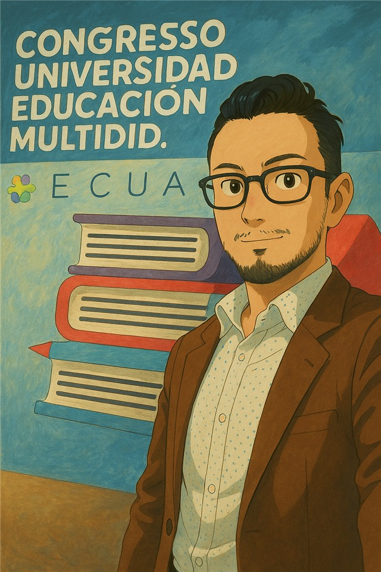

Hola, soy el Dr. Arturo Rodríguez Zambrano, docente ULEAM y doctorando en Psicodidáctica (UPV/EHU, España). Aquí encontrarás serious games diseñados con inteligencia artificial para transformar el aprendizaje de la metodología de investigación y estadística universitaria.
"Los mejores aprendizajes ocurren cuando el estudiante no nota que está estudiando — sino que está jugando, eligiendo, equivocándose y descubriendo."